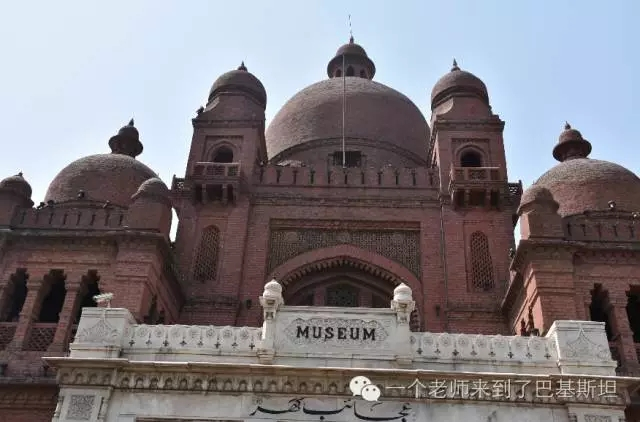
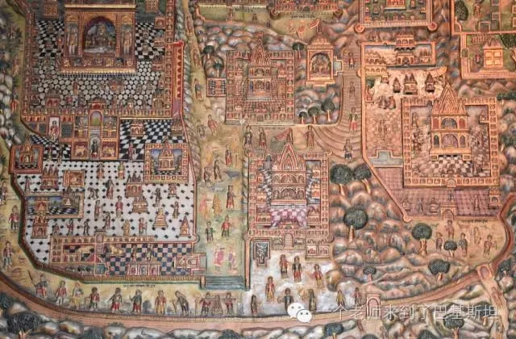
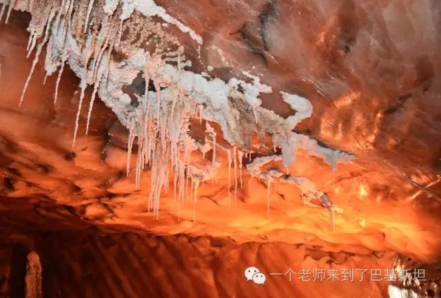
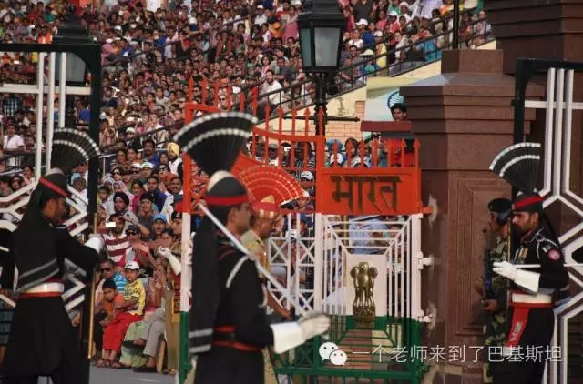
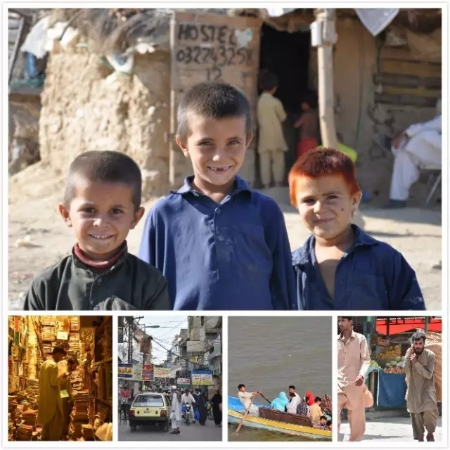

来巴旅游？我想对你说
 138
138
昨晚，一个朋友告诉我：“我想去巴基斯坦旅游”。他接着问我这边有什么好玩的。我一听，猛地起身，敲下了这段文字。
据携程签证发布的2016年上半年签证排行榜显示，1-6月签证增长最快的国家包括巴基斯坦、埃及、南非、阿根廷、捷克、巴西等。其中，巴基斯坦办签人数增长37倍，成为年度最大黑马。
由于中巴友好，目前赴巴基斯坦旅游的呼声很高。不少网友认为出境游应该首选巴基斯坦。
最近知乎、贴吧、微博，以及我们微信号的后台留言里，不少朋友也都在咨询“可以去巴基斯坦旅游吗？”“去巴基斯坦需要注意什么？”。
要不要来巴基斯坦旅游，这里这有什么好玩儿的，去巴基斯坦旅游安全吗，去的话应该注意什么？我们就从这几个大家最关心的问题说说我们的真实想法。
一、首先，这是一件大好事。
两国之间的关系最终得以巩固和深化还是要靠两国之间民民相通、心心相通。促进双方之间了解、加强往来是必须的！况且“百闻不如一见”，能有机会亲自来看一看更是善莫大焉。
然而，许多年来，在中巴民间交往中，确实有一些不太平衡的地方。
1、巴基斯坦去中国的呼声特别高，而中国人以旅游观光为目的赴巴的比例却相对较少。来巴的大多数是商务签证或者公务签，其中以公司外派、赴巴参与项目建设居多。
2、中国民间对巴基斯坦的了解甚少。经常还会闹出一些有意思的笑话。
比如，总有国内朋友反复问我们，“你去的是巴基斯坦还是巴勒斯坦来着？”，“你们那是不是都是沙漠？”，“那里是不是天天打仗？”。
所以，能有机会来这里看一看，对于我们个人，可以开阔眼界，增长知识，确实是一个很不错的体验。
二、去巴基斯坦安全吗？
去巴基斯坦安全吗？几年前我们来这里第一个关心的问题也是这个。
首先，这里并不是一个旅游业发达、成熟的地方。
这里绝对不是一个像韩国、泰国那样一下飞机就有一堆人围着你服务的地方。住哪，怎么坐车，怎么规划路线都是需要我们提前安排好的。白沙瓦、克什米尔等一些敏感地区，外国人必须得到巴国内政部开具的许可信方能进入。
正是由于这些“不方便”，加上每年确实有这样那样的地方发生着“恐怖袭击”事件，我们要严肃冷静地看待这个问题。
1、尽量找到合适的旅行担保人和邀请人。
来巴基斯坦是需要签证的，所谓的巴、中两国“免签”只是“免去签证费用”，提醒大家不要误解。
赴巴旅游签证除了护照、照片、申请表这三样材料外，还需要来自巴国的旅行担保信或邀请函，也就是驻中国使馆确认你来这边有人照顾，才会准签。
2、尽量结伴出行。
这里的旅游配套服务不完备，吃、穿、住、行上面可能会遇到一些困难。
吃，这里的食物主要以烤肉、炖肉为主，刚来可能不太习惯，尤其有些小地方的餐饮业卫生条件也不是很好。
穿，当地的女性穿着比较传统，所以来这边的女性朋友们也要格外注意，尤其在夏天，不宜过多的暴露，容易遭来围观或当地人士的指责。
住、当地的经济连锁型宾馆很少，很多小旅店也不是经常接待外国朋友，你去了他们反倒有点紧张。所以不能像驴友那样玩到哪住到哪。
行，这里的女生基本上很少独自出门，在这里女性同胞的出现也会成为“风景”，也就意味着你很被“关注”。
还是建议结伴出行的好。当然，如果只是在首都伊斯兰堡、巴基斯坦心脏拉合尔等比较安全的大城市看一看、转一转，就不需要太过担心了。
但是，也没有别人说的那么紧张。
结伴出行的话，这边有很多中餐馆，他们也在顺带做住宿、引导等服务，吃住都还是有保障的。
我们之前去拉合尔游玩儿，当时也是住在中国人开的宾馆里，出门也都会由他们配备的警察跟随，还是比较安全的。
三、巴基斯坦有什么好玩的？
对比中国来说，巴基斯坦没什么特别好玩的地儿。
但是，有特别特别好看的。
费萨尔清真寺
费萨尔清真寺，沙特国王赞助、土耳其设计师操刀、四座88米尖塔、背靠青山、可容数万人礼拜，推荐！
拉合尔皇家清真寺

拉合尔博物馆

博物馆壁画
还有拉合尔古堡，世界文化遗产，莫卧儿王朝的建筑艺术奇观，古堡内设迎宾、会议、娱乐、寝居等不同功能分区，皇帝为爱妃建造“镜宫”的爱情故事在巴基斯坦更是家喻户晓。
罗赫达斯要塞
罗赫达斯要塞，巴基斯坦版“古长城”，世界文化遗产！是早年中亚和南亚地区穆斯林军事建筑中的一个典范，很多来巴的朋友并不太熟悉这个地方，喜欢历史、军事的朋友可以来看一看。

克乌拉盐矿壁景
克乌拉盐矿为世界第二大盐矿，也是巴基斯坦最大最古老的盐矿，始建于公元前326年。我们可以坐“小火车”进洞参观，“盐灯”将是不错的伴手礼。

印度边境降旗仪式
“瓦噶”印巴边境。这里有举世闻名的吹胡子瞪眼、高抬腿。升旗、降旗仪式每天在两国人民的呐喊声中上演，但是一切又都被组织的井然有序，这种“对峙”又“默契”，实乃当今世界的一大奇观。
这里还有。。。
塔克西拉。在这你可以看到唐僧在巴基斯坦曾住过的房子，对这段故事感兴趣的朋友可以来好好看看。
莫莉小山。离伊斯兰堡两小时车程，曾被用作英国军方避暑疗养胜地，满山的猴子，夏日阴凉，冬天有积雪，也是当地人最喜爱的休闲场所之一。
小山公园。自1964年周恩来总理种下“中巴友谊树”以来，中国多位国家领导人访巴这里都是必到之处，2013年李克强总理在此种下“长叶松”，寓意着祝福中巴友谊万古长青。
对了，卡拉奇还可以看海。
关于巴基斯坦的游记类的文章，感兴趣的朋友欢迎催稿，我们将为您带来持续不断的的更新。
笔者认为，来巴基斯坦旅游时，巴国人们不同层次的生活现状和社会百态更是让人回味无穷、意犹未尽。
来这里，你将收获到无数的“nihao”，这里的人们会非常热情地邀请你合影、聊天。不管走到哪，你会完全沉浸在“中巴友好”的氛围里。
来这里，你能感觉到的是：虽然人们不太富有，但是他们却拥有热情洋溢的脸庞、闲适地躺卧聊天、滋滋有味地品茶、一家老小欢呼雀跃地出游，这些将会引发你对生活、生命的新的思考。
当你登上飞机、踏上祖国的大好河山，你的脑海会浮现出这样的宁静：在地球上有这样一个国度，那里的人们可能不富有，但快乐却来得那么简单。

巴基斯坦民生百态组图
以上几组画面都是我们在别处所看不到的，如果当你在巴国看见这些场景时，你细心的观察和倾心的体会，我认为那将是你来巴最大的收获。
四、如果去巴基斯坦旅游，需要带些什么？
1、带上小伙伴，结伴出行。
2、穷家富路，准备充足必要的花费。可以备一张华夏银行的卡，在这边取款机是可以直接取卢比的，只是每日有一定限额。
3、肠胃不太好的朋友，建议带上自己惯用的药，有些朋友刚来饮食上会不太适应。
4、国内的电话开通国际漫游，大概需要800块钱押金。当然在当地办理巴国的号码是再好不过的了，打国内RMB两毛左右，微信、微博什么都可用。
5、衣服行李不用太多，建议轻装。很多女生来这喜欢当地的服饰，轻纱一裹、长衣飘飘，甚是好看，而且也相对安全。
6、带好你的行程规划，有效利用好时间，以免毫无目的地到处逗留。
五、关于出游的几点补充
如果要来巴国旅游，请你不要盲目跟风。尽可能地多掌握一些可靠的信息。
如果，暂时没有计划或不便出行，那么我们可以“再”做一点别的功课嘛！
1、推荐一部有关巴国题材的电影《小萝莉的猴神大叔》。
《小萝莉的猴神大叔》剧照
这是一部印度电影，但是里面有很多巴基斯坦元素，而且有一半的故事都是发生在巴基斯坦。如果非要评价，我们想说：这绝对是一部有温度的电影。
电影赶紧去看，不剧透。我们重点介绍一下其中的巴基斯坦元素。
a、可以看到巴国人民对国球板球的热爱和极强的民族维护感。
b、可以了解巴基斯坦的传统饮食、服饰文化。
c、可以体会到巴基斯坦人的喜感和对他人热情的施助。
d、最重要的是可以不来巴基斯坦就能领略到巴国美丽、壮阔的山野风光。
2、可以先去新疆走一走。
巴基斯坦和新疆接壤，从乌鲁木齐出发两个半小时就到了伊斯兰堡。
那么，有兴趣的朋友们，不妨可以先去新疆看一看。适应一下咱们国家的穆斯林文化，这样的过渡你会感到亲切、自然。
巴基斯坦的北部风景和新疆地区的北部风景有异曲同工之妙，如果还没有做好来巴的准备，那么去我们大新疆看看也可以让你大饱眼福喔！
最后，不论你的假期想要去哪里度过，安全第一，切勿急躁。等一切时机成熟、安排妥当时，我们再快快乐乐地出发，高高兴兴地回家。

（图：大新；文：LULU）